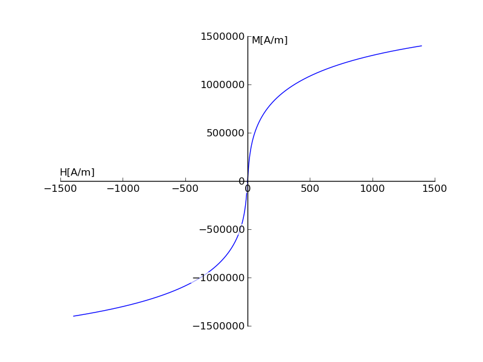

avamaity
avamaity Magnetic Saturation
The book Computer-aided Analysis of Electric Machines by Vlado Ostovic uses the Langevin’s function to depict magnetic saturation. Here is a translation of the Mathematica code given in the book to python.
from __future__ import division
from functools import partial
from scipy.optimize import fsolve
import numpy as np
import matplotlib.pyplot as plt
import matplotlib as mpl
def coth(x):
return 1/np.tanh(x)
def Langevin(M, H):
Ms,a,alpha = 2*10**6,1100,1.6*10**(-3)
return (M/Ms)-(coth((H+alpha*M)/a)-a/(H+alpha*M))
ms=[]
hs=[]
for m in np.linspace(-14*10**5,14*10**5,5*10**4):
h = fsolve(partial(Langevin,m),-1390)
ms.append(m)
hs.append(h)
ticklabelpad = mpl.rcParams['ytick.major.pad']
fig = plt.figure(1)
ax = plt.subplot(111)
fig.add_subplot(ax)
ax.spines['right'].set_color('none')
ax.spines['top'].set_color('none')
ax.xaxis.set_ticks_position('bottom')
ax.spines['bottom'].set_position(('data',0))
ax.yaxis.set_ticks_position('left')
ax.spines['left'].set_position(('data',0))
ax.annotate('M[A/m]', xy=(.56,1), xycoords='axes fraction',
horizontalalignment='center', verticalalignment='top')
ax.annotate('H[A/m]', xy=(0,.53), xycoords='axes fraction',
horizontalalignment='left', verticalalignment='center')
plt.plot(hs,ms)
for label in ax.get_xticklabels() + ax.get_yticklabels():
label.set_fontsize(12)
label.set_bbox(dict(facecolor='white', edgecolor='None', alpha=0.65 ))
plt.savefig("sat.png")
plt.show()
The generated plot looks something like this:
I have yet to figure out how to take care of the following warning and the time taken to generate the plot seems too long. Any ideas?
In [3]: %run saturation_curve_plot.py
/Users/amaity/.virtualenvs/env1/src/scipy/scipy/optimize/minpack.py:221:
RuntimeWarning: The iteration is not making good progress, as measured by the
improvement from the last ten iterations.
warnings.warn(msg, RuntimeWarning)